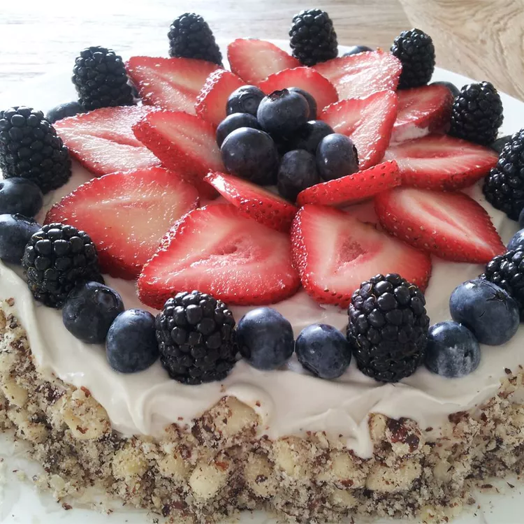

Vanilla Cake
As a great option for a vegan cake it can be used as a birthday party cake with topping or buttercream frosting.
Info
| Prep time | Cook time | Total time | Servings | Yield |
|---|---|---|---|---|
| 15 mins | 35 mins | 50 mins | 8 | 1 8x8 inch pan |
Ingredients
- 1 cup plain soy milk
- 1 tablespoon apple cider vinegar
- 1 ½ cups unbleached all-purpose flour
- 1 cup white sugar
- 1 teaspoon baking soda
- 1 teaspoon baking powder
- ½ teaspoon salt
- ⅓ cup canola oil
- ¼ cup water
- 1 tablespoon lemon juice
- 1 tablespoon vanilla extract
- ¼ teaspoon almond extract
Steps
- Preheat oven to 350 degrees F (175 degrees C). Grease and flour an 8x8-inch baking dish.
- Stir soy milk and vinegar together in a large glass measuring cup.
- Whisk flour, sugar, baking soda, baking powder, and salt together in a bowl.
- riskly mix canola oil, water, lemon juice, vanilla extract, and almond extract into soy milk mixture using a fork. Stir soy milk mixture into flour mixture until batter is lump-free. Pour batter into the prepared baking dish.
- Bake in the preheated oven until a toothpick inserted in the center of the cake comes out clean, about 35 minutes.
Tips
You can use all water in place of the soy milk, but the soy milk adds more flavor. Also, consider that for this to be truly vegan you must purchase sugar made without the use of animal byproduct which you can usually buy at your local, friendly health food market.